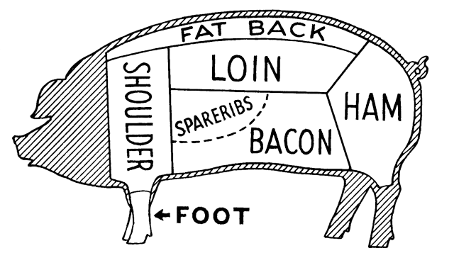

Colonial era
Originated during the slave trade. Plantation owners gave unwanted
pork scraps to black slaves who would cook them with beans
1800s-1900s
Freed slaves in Rio de Janeiro continued cooking feijoada.
Becoming a staple in working class neighborhoods
1900s-1960s
As slavery ended it became a symbol of Brazil's heritage
representing resourcefulness and pride. Feijoada restaurants
proliferated across Brazil
